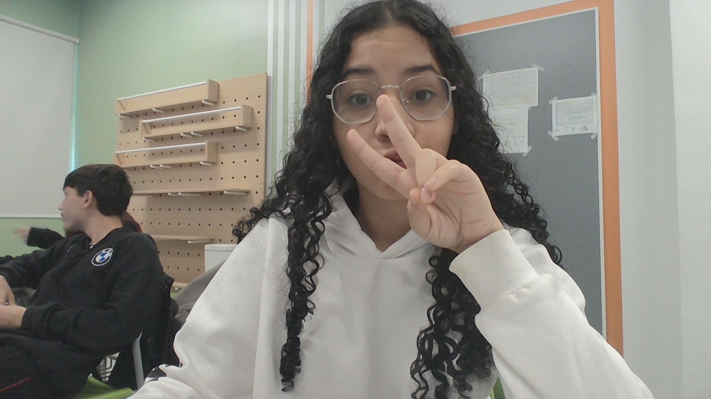

1. Samantha Abreu
Uma Foto:

2. Samantha Abreu
Sobre Mim: Sou uma pessoa criativa, curiosa e determinada, que gosta de aprender coisas novas, explorar ideias e colocar a criatividade em prática. Sou comunicativa, gosto de estar com meus amigos e valorizo muito as pessoas que fazem parte da minha vida. Tenho interesse por tecnologia, design e projetos que me desafiem a pensar de formas diferentes. Também sou uma pessoa que busca melhorar constantemente, descobrir novas habilidades e conquistar meus objetivos, sempre mantendo minha personalidade e meu jeito de ser.